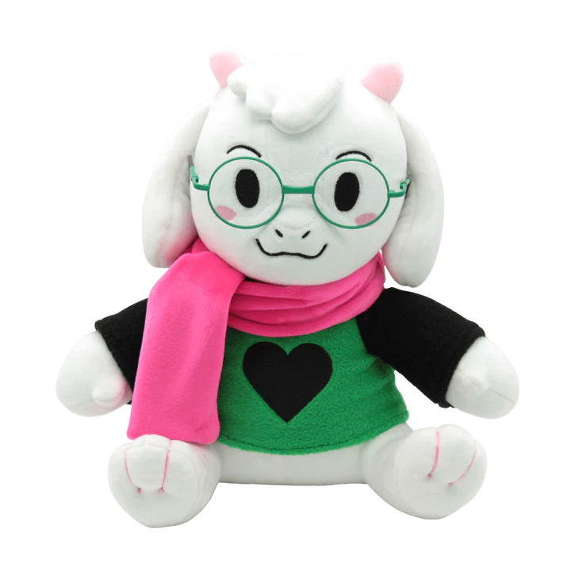
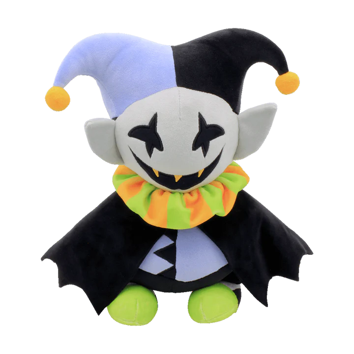
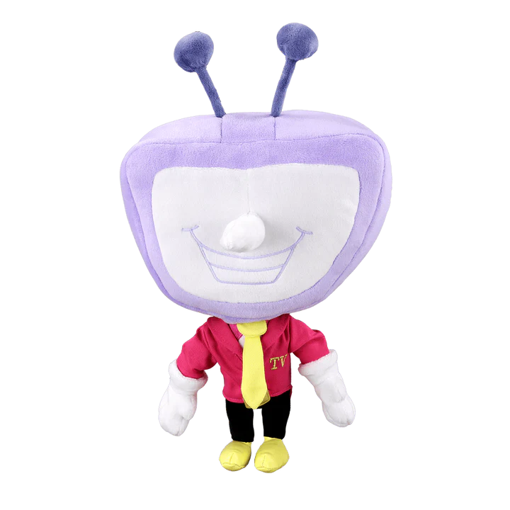
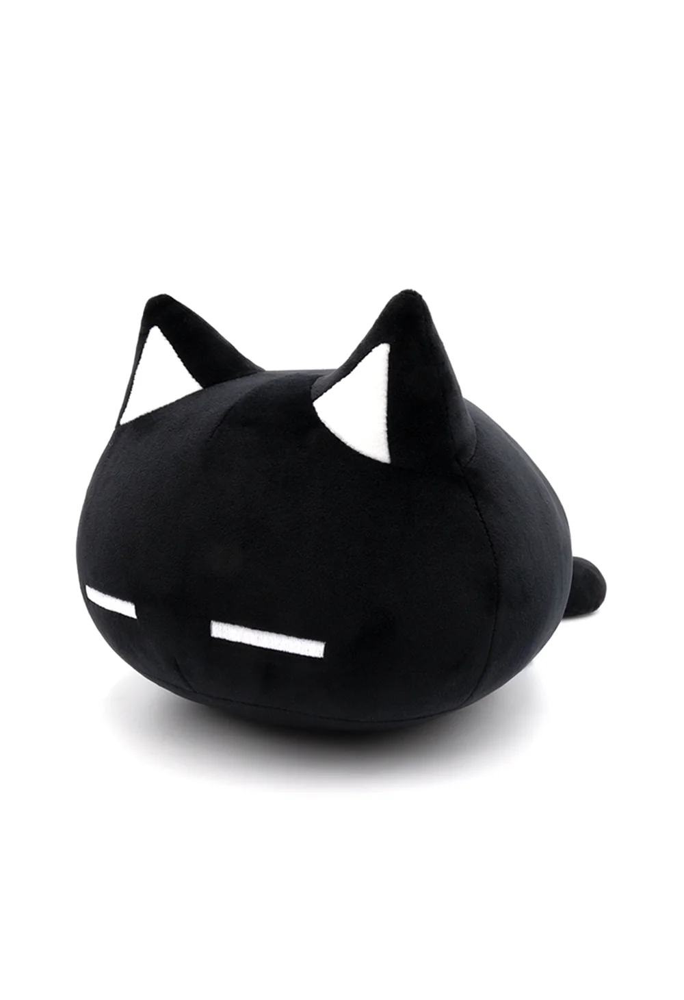
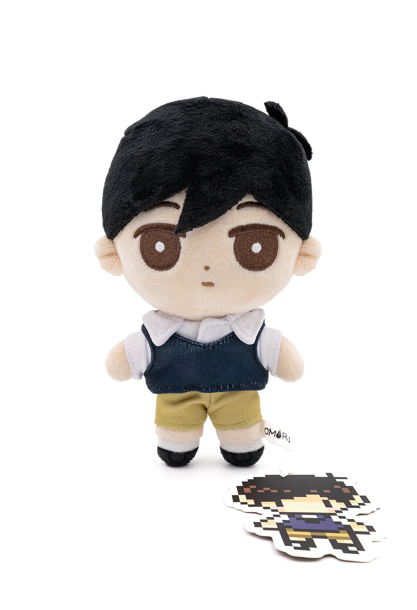
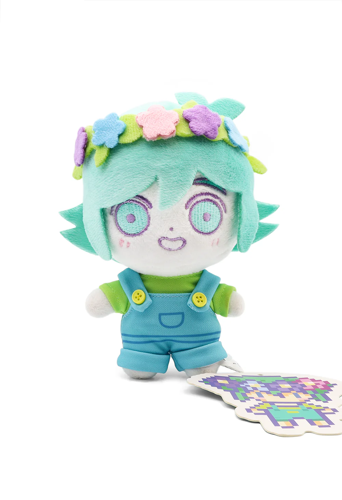
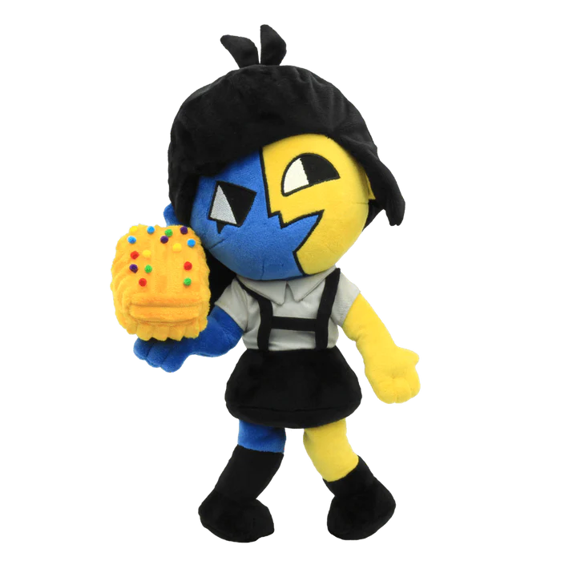
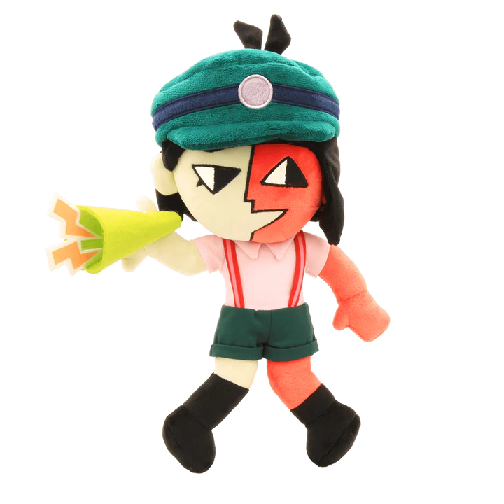

Gathered indie stuffs, for indie people. :)
* This website was created for selling merchandises from various indie games.
* The intention of making this website is to gathered plushes represented those indie games for people who love collecting stuffs from their beloved games.
 |
Toriel Plush ($ 36) * The Toriel plush, prototyped by Fangamer's own Saber Murphy, is 10 inches tall and features an embroidered face and Delta Rune. Ref: Fangamer |
|---|---|
 |
Sans Plush ($ 36) * This sans plush is 10 inches tall (seated) and comes with a couple of extra eyes, for some reason. Collaboratively designed by Saber Murphy and Toby Fox. Ref: Fangamer |
 |
Papyrus Plush ($ 36) * This official Papyrus plush is 12 inches tall (seated). Collaboratively designed by Saber Murphy and Toby Fox. Ref: Fangamer |
 |
Temmie Plush ($ 36) * This full-sized Temmie plush is about 10 inches tall and comes with a colleg diploma. Our new production run doesn't include a box, but we've added a Shop Tem sticker so your Tem can set up shop in any cardboard box you have handy. It was designed by HollyIvyDesigns, Temmie Chang, Betty Kwong, and Saber Murphy. Ref: Fangamer |
 |
Hat Ralsei Plush ($ 36) * This Ralsei plush was designed by Saber Murphy and prototyped by Eyes5. Ralsei is about 12 inches tall (with his hat!) when seated and comes with removable scarf, hat, and glasses. Ref: Fangamer |
|---|---|
|  | No Hat Ralsei Plush ($ 36) * This official DELTARUNE plush was designed by Saber Murphy based on a template created by Eyes5. It's about nine inches tall when seated and is not wearing a hat. Ref: Fangamer |
 |
Seam Plush ($ 36) * This official DELTARUNE plush, measuring about 9.8 inches tall, was designed by Saber Murphy and Eyes5. Ref: Fangamer |
|  | Jevil Plush ($ 36) * This official, posable DELTARUNE plush was designed by Saber Murphy and stands about 10 inches tall. Its voice box requires three AAA batteries (included) and speaks 8 English and 8 Japanese phrases. (You can switch between languages by pressing and holding the voicebox button until you hear a beep.) Ref: Fangamer |
![[KROMER] MAN](resources/Spamton_Plush.png) |
Spamton Plush ($ 36) * This official Spamton plush was designed by Saber Murphy and measures about 12 inches long when cradled like a newborn baby in your arms. (Due to its proportions it can't stand upright without support.) It makes one of five sounds when you squeeze its head in. (Requires 3 replaceable AAA batteries [included].) This product contains active electronics. Please refrain from contact with water, electricity, or heat. Ref: Fangamer |
|  | Tenna Plush ($ 36) * This official DELTARUNE plush was designed by Saber Murphy. It's about 11 inches tall (not counting the antenna). Ref: Fangamer |
|  | Mewo Plush ($ 35) * 100% polyester/100% PP cotton and measures approximately 7" tall and 14" long from head to tail. Ref: Omocat |
|---|---|
 |
Omori Plush ($ 28) * 100% polyester / 100% PP cotton and measures approximately 6.5" tall. Ref: Omocat |
|  | Sunny Plush ($ 28) * 100% polyester / 100% PP cotton and measures approximately 6.75" tall. Ref: Omocat |
 |
Aubrey Plush ($ 28) * 100% polyester / 100% PP cotton and measures approximately 7" tall. Ref: Omocat |
 |
Kel Plush ($ 28) * 100% polyester / 100% PP cotton and measures approximately 7" tall. Ref: Omocat |
 |
Hero Plush ($ 28) * 100% polyester / 100% PP cotton and measures approximately 7.25" tall. Ref: Omocat |
 |
Mari Plush ($ 28) * 100% polyester / 100% PP cotton and measures approximately 7" tall. Ref: Omocat |
 |
Basil Plush ($ 28) * 100% polyester / 100% PP cotton and measures approximately 6.75" tall. Ref: Omocat |
|  | Basil HS Plush ($ 28) * 100% polyester / 100% PP cotton and measures approximately 6.5" tall. Ref: Omocat |
 |
Niko Plush ($ 32) * This official OneShot plush was designed by Nightmargin. Niko is 6.5 inches tall and features a wide, bendable brim, and includes a plush sun, which attaches to Niko's hands with magnets. Ref: Fangamer |
|---|
| Knight Plush ($ 32) * This official Hollow Knight plush was prototyped by Saber Murphy and Eyes5. It stands approximately 8 inches tall. Magnets in both hands and on the Knight's back make it easy to wield the Nail or keep it sheathed. Ref: Fangamer |
|
|---|---|
| Hornet Plush ($ 32) * This official Hollow Knight plush was prototyped by Saber Murphy and Eyes5. Hornet stands more than a foot tall and includes a plush needle that attaches with magnets. Ref: Fangamer |
|
| Hollow Knight Plush ($ 32) * This official Hollow Knight plush was designed and prototyped by Eyes5. It's about 15.7 inches tall. Ref: Fangamer |
|
 |
Grimm Plush ($ 29) * This official Hollow Knight Grimm plush was designed by Eyes5. It measures about 14 inches tall and is fully posable—even the cape. Ref: Fangamer |
|  | JENA Plush ($ 39) * This official JENA plush was designed and prototyped by Eyes5 and measures about 12 inches tall. It comes with a plush Turrón (Turrón? Turrón!) accessory. Ref: Fangamer |
|---|---|
|  | ENA Plush ($ 39) * This official ENA: Dream BBQ plush was designed by Eyes5. It comes with a removable hat and a megaphone accessory that attaches to ENA's hands with an elastic loop. It's about 11 inches tall, with a voice box including 20 phrases. (This plush cannot stand on its own.) Ref: Fangamer |
| Madotsuki Plush ($ 32) * This official Yume Nikki plush was designed by Audrey Waner and Eyes5. It measures about 10 inches tall when seated and comes with a plush knife that can attach magnetically to either hand. Ref: Fangamer |
|---|
| Judge Plush ($ 36) * This official OFF plush was designed by Laura Verdin. It's about 13.8 inches long, teeth to tail, and purrs (for the most part) when you squeeze the included voice box. Ref: Fangamer |
|---|
 |
Shuanshuan's Yi Plush ($ 36) * This official Nine Sols plush was designed by Saber Murphy... based on Shuanshuan's in-game prototype. It's about 10 inches tall when seated. Ref: Fangamer |
|---|